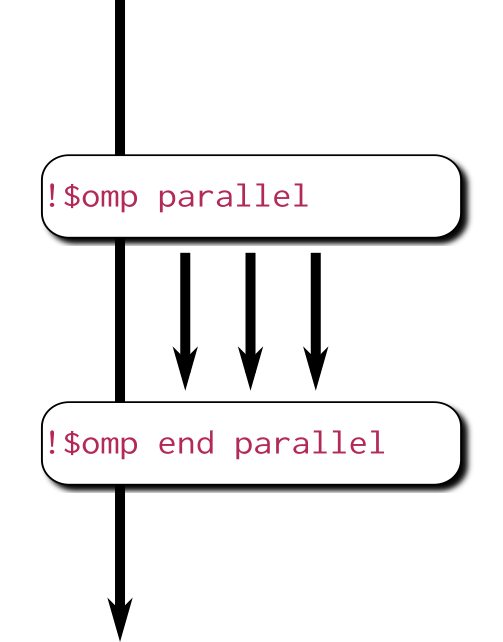

Hybrid MPI+OpenMP programming
CSC Summerschool, 2019-07
Processes and threads
Process
- Independent execution units
- Have their own state information and own memory address space
Thread
- A single process may contain multiple threads
- Have their own state information, but share the same memory address space
Processes and threads
Process
- Long-lived: spawned when parallel program started, killed when program is finished
- Explicit communication between processes
Thread
- Short-lived: created when entering a parallel region, destroyed (joined) when region ends
- Communication through shared memory
Hybrid programming
Hybrid programming: Launch threads (OpenMP) within processes (MPI)
Process
- Independent execution units
- MPI launches N processes at application startup
Thread
- Threads share memory space
- Threads are created and destroyed (parallel regions)
Hybrid programming
- Shared memory programming inside a node, message passing between nodes
- Matches well modern supercomputer hardware
- Often one MPI task / socket, but one should experiment with the ratio
FIXME

Example: Hybrid hello
#include <stdio.h>
#include <mpi.h>
#include <omp.h>
int main(int argc, char *argv[]) {
int my_id, omp_rank;
int provided;
int required = MPI_THREAD_FUNNELED;
MPI_Init_thread(&argc, &argv, required,
&provided);
MPI_Comm_rank(MPI_COMM_WORLD, &my_id);
#pragma omp parallel private(omp_rank)
{
omp_rank = omp_get_thread_num();
printf("I'm thread %d in process %d\n",
omp_rank, my_id);
}
MPI_Finalize();
}$ cc hybrid-hello.c -o hybrid-hello
$ aprun -n 2 -d 4 -e OMP_NUM_THREADS=4
./hybrid-hello
I'm thread 0 in process 0
I'm thread 0 in process 1
I'm thread 2 in process 1
I'm thread 3 in process 1
I'm thread 1 in process 1
I'm thread 3 in process 0
I'm thread 1 in process 0
I'm thread 2 in process 0Thread support in MPI

Thread safe initialization
MPI_Init_thread(required, provided)argc,argv- Command line arguments in C
required- Required thread safety level, one of
MPI_THREAD_SINGLE < MPI_THREAD_FUNNELED < MPI_THREAD_SERIALIZED < MPI_THREAD_MULTIPLE
provided- Supported thread safety level, one of
MPI_THREAD_SINGLE < MPI_THREAD_FUNNELED < MPI_THREAD_SERIALIZED < MPI_THREAD_MULTIPLE
error- Error value; in C/C++ it's the return value of the function, and in Fortran an additional output parameter
Hybrid programming styles: fine/coarse grained
- Fine-grained
- Use omp parallel do/for on the most intensive loops
- Possible to hybridize an existing MPI code with little effort and in parts
- Coarse-grained
- Use OpenMP threads to replace MPI tasks
- Whole (or most of) program within the same parallel region
- More likely to scale over the whole node, enables all cores to communicate (if supported by MPI implementation)
Potential advantages of the hybrid approach
- Fewer MPI processes for a given amount of cores
- Improved load balance
- All-to-all communication bottlenecks alleviated
- Decreased memory consumption if an implementation uses replicated data
- Additional parallelization levels may be available
- Possibility for dedicating threads for different tasks
- e.g. dedicated communication thread or parallel I/O
- Note that OpenMP worksharing constructs (e.g. OMP DO) will not be applicable when dedicating threads
Disadvantages of hybridization
- Increased overhead from thread creation/destruction
- More complicated programming
- Code readability and maitainability issues
- Thread support in MPI and other libraries needs to be considered
Real-world hybrid applications
- Vlasiator - space weather simulations
- Fluid in 6D spatial/velocity space: spatial grid with MPI, velocity grid with OpenMP
- Lower memory footprint and better load balancing
- CP2K - electronic structure simulations
- Especially so called hybrid functionals benefit from threading
- Lower memory footprint allows more efficient computations
Real-world hybrid applications
- Vlasiator, 200 nodes (4800 cores) on Sisu
| Threads per process | Hyperthreads per core | MPI ranks per node | Performance (108 cells/s) | Memory use per node (GB) |
|---|---|---|---|---|
| 1 | 1 | 24 | 1.06 | 28.4 |
| 2 | 1 | 12 | 1.06 | 24.6 |
| 4 | 1 | 6 | 1.04 | 22.8 |
| 6 | 1 | 4 | 1.02 | 22.2 |
| 2 | 2 | 24 | 1.35 | 28.5 |
| 4 | 2 | 12 | 1.33 | 24.6 |
| 6 | 2 | 8 | 1.32 | 23.4 |
| 12 | 2 | 4 | 1.25 | 22.2 |
Summary
- Hybrid programming maps well to modern hardware
- In theory, hybrid programming offers several advantages
- In practice, all the advantages can be difficult to realize
- As number of cores inside a node increases, advantages of hybrid approach are likely to become more and more relevant
- MPI provides different levels of thread support
OpenMP
What is OpenMP?
- A collection of compiler directives and library routines for multi-threaded, shared-memory parallelization
- Fortran 77/9X/03 and C/C++ are supported
- Latest version of the standard is 4.5 (November 2015)
- support for attached devices
- support for thread affinity
Why would you want to learn OpenMP?
- OpenMP parallelized program can be run on your many-core workstation or on a node of a cluster
- Enables one to parallelize one part of the program at a time
- Get some speedup with a limited investment in time
- Efficient and well scaling code still requires effort
- Serial and OpenMP versions can easily coexist
- Hybrid MPI+OpenMP programming
Three components of OpenMP
- Compiler directives, i.e. language extensions, for shared memory parallelization
| directive | construct | clauses | |
|---|---|---|---|
| C/C++ | #pragma omp |
parallel |
shared(data) |
| Fortran | !$omp |
parallel |
shared(data) |
- Runtime library routines (Intel: libiomp5, GNU: libgomp)
- Conditional compilation to build serial version
- Environment variables
- Specify the number of threads, thread affinity etc.
OpenMP directives
- Sentinels precede each OpenMP directive
- C/C++:
#pragma omp - Fortran:
!$omp
- C/C++:
Conditional compilation with
_OPENMPmacro:#ifdef _OPENMP OpenMP specific code #else Code without OpenMP #endif
Compiling an OpenMP program
- Compilers that support OpenMP usually require an option that enables the feature
- GNU:
-fopenmp - Intel:
-qopenmp - Cray:
-h omp- OpenMP enabled by default, -h noomp disables
- PGI:
-mp[=nonuma,align,allcores,bind] - Without these options a serial version is compiled!
- GNU:
Example: Helloworld with OpenMP
program hello
use omp_lib
integer :: omp_rank
!$omp parallel private(omp_rank)
omp_rank = omp_get_thread_num()
print *, 'Hello world! by &
thread ', omp_rank
!$omp end parallel
end program hello> ftn -h omp omp_hello.f90 -o omp
> aprun -e OMP_NUM_THREADS=4 -n 1 -d 4 ./omp
Hello world! by thread 0
Hello world! by thread 2
Hello world! by thread 3
Hello world! by thread 1#include <stdio.h>
#include <omp.h>
int main(int argc, char argv[]){
int omp_rank;
#pragma omp parallel private(omp_rank){
omp_rank = omp_get_thread_num();
printf("Hello world! by
thread %d", omp_rank);}
}> cc -h omp omp_hello.c -o omp
> aprun -e OMP_NUM_THREADS=4 -n 1 -d 4 ./omp
Hello world! by thread 2
Hello world! by thread 3
Hello world! by thread 0
Hello world! by thread 1Parallel regions and data sharing
Parallel construct
- Defines a parallel region
- C/C++:
#pragma omp parallel [clauses] - Fortran:
!$omp parallel [clauses] - Prior to it only one thread, master
- Creates a team of threads: master+slave threads
- At end of the block is a barrier and all shared data is synchronized
- C/C++:
SPMD: Single Program Multiple Data 
How do the threads interact?
- Because of the shared address space threads can interact using shared variables
- Threads often need some private work space together with shared variables
- for example the index variable of a loop
- Visibility of different variables is defined using data-sharing clauses in the parallel region definition
omp parallel: data-sharing clauses
- private(list)
- Private variables are stored in the private stack of each thread
- Undefined initial value
- Undefined value after parallel region
- firstprivate(list)
- Same as private variable, but with an initial value that is the same as the original objects defined outside the parallel region
omp parallel: data-sharing clauses
- shared(list)
- All threads can write to, and read from
- a shared variable
- Variables are shared by default
- default(private/shared/none)
- Sets default for variables to be shared, private or not defined
- In C/C++ default(private) is not allowed
- default(none) can be useful for debugging as each variable has to be defined manually
Race condition = a thread accesses a variable while another writes into it
Default behaviour
- Most variables are shared by default
- Global variables are shared among threads
- C: static variables, file scope variables
- Fortran: save and module variables, common blocks
threadprivate(list)can be used to make a private copy
- Global variables are shared among threads
- Private by default:
- Stack variables of functions called from parallel region
- Automatic variables within a block
Data sharing example
main.c
int A[5];
int main(void) {
int B[2];
#pragma omp parallel
{
float c;
do_things(B);
...
}
return 0;
}kernel.c
extern int A[5];
void do_things(int *var) {
double wrk[10];
static int status;
...
}